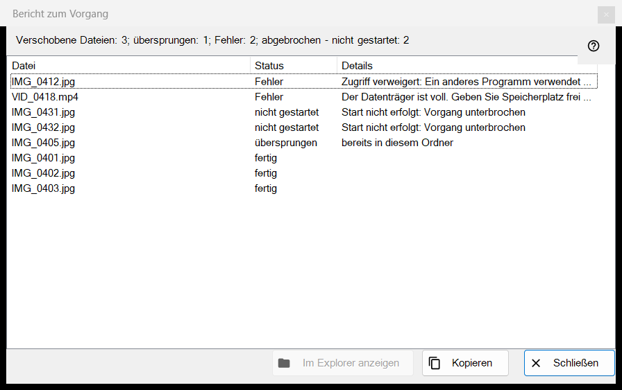
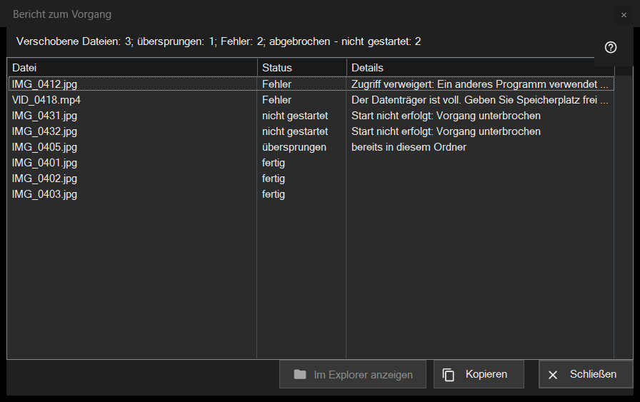

Bericht zum Vorgang
Verwendungszweck
Listet auf, was mit jeder Datei des letzten Stapelvorgangs (Verschieben, Kopieren, Löschen oder Rückgängig) geschah und warum etwas übersprungen wurde oder fehlschlug. Das Fenster öffnet sich nie von selbst: Klicken Sie nach einem Lauf auf die Berichtszeile am unteren Rand der Miniaturansicht (F3). War der Lauf nicht sauber, endet die Zeile mit «klicken für Details».


In dieser Reihenfolge
- Führen Sie in der Miniaturansicht einen Vorgang für mehrere Dateien aus.
- Lesen Sie die Zusammenfassungszeile am unteren Rand des Panels.
- Klicken Sie auf die Zeile, um dieses Fenster zu öffnen.
- Sehen Sie oben in der Liste nach: Fehlschläge stehen zuerst.
- Wählen Sie Zeilen aus und nehmen Sie mit «Kopieren» ihre Pfade oder finden Sie mit «Im Datei-Explorer anzeigen» eine Datei.
Die Elemente
Die Zusammenfassungszeile
Die Zeile beginnt mit dem Ergebnis: «Verschobene Dateien: 5», «Kopierte Dateien: 5», «Gelöschte Dateien: 5», «Wiederhergestellte Dateien: 5» oder «Abgeschlossene Vorgänge: 5». Weitere Teile mit je ihrer Anzahl erscheinen nur, wenn die Anzahl nicht null ist: «übersprungen», «Fehler», «Vorgänge ohne Rücknahme», «dauerhaft gelöscht, kann nicht wiederhergestellt werden» und, wenn der Lauf vorzeitig endet, «unterbrochen, keine Verbindung zum Ordner - nicht gestartet» (drei fehlgeschlagene Verbindungen hintereinander stoppen ihn) oder «abgebrochen - nicht gestartet».
Die Liste
Spalten: Datei, Status und Details. Die schlechtesten Zeilen kommen zuerst: fehlgeschlagen, dann nicht gestartet, dann übersprungen, dann erledigt; innerhalb einer Gruppe behalten die Dateien die Reihenfolge des Laufs. Der Tooltip einer Zeile zeigt den vollständigen Pfad. Die Details nennen bei einem Fehlschlag einen klaren Grund, bei einer erledigten Datei den Zielordner, «gespeichert als» und den neuen Namen, wenn der alte schon vergeben war, und «Endgültig gelöscht - Rücknahme nicht verfügbar» bei einem Löschen, das den Papierkorb übergangen hat.
Zustände und Gründe fürs Überspringen
Zustände: «fertig», «Fehler», «übersprungen», «nicht gestartet». Eine übersprungene Datei nennt den Grund: «bereits in diesem Ordner», «Datei nicht mehr auf dem Datenträger», «Dateien im Archiv werden nicht geändert», «derselbe Name existiert bereits unter den ausgewählten Dateien», «Ressource ist schreibgeschützt», «dies ist dieselbe Datei» oder «Name im Zielordner bereits vergeben». Bei einer nicht gestarteten Datei steht «Start nicht erfolgt: Vorgang unterbrochen».
Im Datei-Explorer anzeigen, Kopieren, Schließen
«Im Datei-Explorer anzeigen» ist aktiv, wenn eine Zeile ausgewählt ist; es öffnet ein Ordnerfenster, in dem die erste ausgewählte Datei markiert ist, oder den Ordner, wenn die Datei verschoben wurde. «Kopieren» (auch Ctrl+C) legt die vollständigen Pfade der ausgewählten Zeilen in die Zwischenablage, einen pro Zeile, oder aller Zeilen, wenn keine ausgewählt ist: ein schneller Weg, die Liste der Problemdateien weiterzugeben. «Schließen» beendet den Bericht.